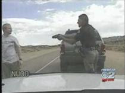

How would you react if you were waylaid by an armed and bellicose stranger who has the means to kill you and your family and the power to get away with the crime?Very few of us would react with the self-possession displayed by 28-year-old Jared Massey when his SUV was stopped by John Gardner of the Utah Highway Patrol (UHP) last September 14.
Whether or not Massey was speeding through a construction zone, he was entirely within his rights to demand clarification of his supposed offense before affixing his signature to the traffic ticket. There was no need for Massey's signature.
Had Gardner been interested in enforcing the law rather than asserting his authoritah,* he would simply have scrawled “refuses to sign” on the citation in his no-doubt puerile and illegible hand (as a tax feeder of the thug caste, Gardner is marginally literate at best), handed it to the motorist, and gone about his merry way in pursuit of fresh victims.
But Gardner, most likely motivated by the resentments common to steers that wish they were bulls, just had to order Massey out of the car and place him under arrest – for doing nothing that constitutes a crime.
It is not a crime for a citizen to demand that a police officer justify a traffic stop. Massey, who admitted to driving 68 mph in what he apparently thought was a 65 mph zone, was reasonably cooperative and genuinely puzzled by Gardner's claim that the driver had missed a sign posting a 40 mph construction zone.
Gardner assumed a hostile posture when Massey made his further cooperation contingent on being shown that he had violated the speed limit. Which is to say that Gardner immediately sized up the motorist as an enemy combatant (no other term is adequate) because Massey refused to behave as a cringing, docile serf.

It is not a crime for a motorist to withhold his signature from a traffic ticket, since the signature is unnecessary (refusing to sign means that you won't be charged with a misdemeanor if you don't show up in court). A UHP spokesman has conceded that Gardner's best option was to put the citation in the vehicle "in a professional manner and leave it at that."
And once again, Massey was making an entirely reasonable request: He wanted to be shown the speed limit sign he had supposedly ignored.
At this point, Gardner needlessly escalated the encounter to one of unalloyed violence, ordering Massey from the car and attempting to place him under arrest. Although the regulations of his professional tribe permit this, Gardner had no right or reason to do this, since the ticket had been written and the matter should have been turned over to a court.
But Gardner, like nearly everybody else in his line of work, believes that his job is not to protect the public, but to make it submit to the supposed authority of the State. Which is why, when Massey quite reasonably decided he was no longer going to play the role in which Gardner had cast him, the UHP officer committed the crime of assault with a deadly weapon by shooting Massey with his Taser.
This was done while Massey was walking away from Gardner. His behavior was non-cooperative, but also non-threatening. The UHP's policy governing the use of a Taser does not permit an officer to use it against someone who is merely non-cooperative; the subject must pose some kind of threat to himself, the officer, or innocent bystanders in order for a Taser attack to be justified.
The problem here is that Gardner, a 14-year veteran of the UHP, was about to lose bladder control (an affliction common to geldings), so frightened had he become by Massey's non-threatening behavior.
As the hero explained to a colleague a few minutes later, Massey was “making me nervous as hell” by his insistence on being treated as a reasonable adult, rather than behaving like a timid child. “I was like, nah, we ain't playing this game,” Gardner boasted to the second officer by way of justifying the Taser strike.
“Good,” gloated the second tax-fed parasite. “Good for you.”
Bear in mind here that it was Gardner who was playing a “game” by needlessly escalating an unpleasant situation. If he had been genuinely concerned about his personal safety, why did he order Massey from the car, rather than simply handing him the citation and walking away, when there was no reason for an arrest? Why commit an armed assault on a husband and father in front of his family, and then threatening the wife with arrest for objecting to her husband's treatment?
This was undisguised, needless aggression fueled by an adolescent need on Gardner's part to assert dominance over someone who wasn't part of his club. Which is why his behavior received the immediate and unqualified approval of another member of that gang.
We are incessantly hectored about the supposedly indispensable role played by police in protecting us from the anarchic violence that would prevail in their absence. Yet every single day – thanks, in no small measure, to the advent of on-line video – we see how police themselves have become the most dangerous predators we face.
Through his literary creation Screwtape, C.S. Lewis once warned (I paraphrase) that one of the Devil's most effective tricks is to rivet the public mind on the danger posed by a vice that is the exact opposite of the one currently in vogue. For example, where gluttony is ubiquitous, the Devil tempts people to condemn the vanity of those who strive to remain thin.
In like manner, we are always and ever admonished about the evils of anarchy at a time when the State and its agents are, with ever-increasing brazenness, imposing unalloyed tyranny on our society. We are treated to pious homilies about the need for citizens to respect the law when those exercising government power are becoming entirely emancipated from any restraints on their discretionary use of lethal violence. We are instructed to ruminate on the manifold hypothetical outrages that could be committed in the name of anarchy, even as the very tangible atrocities committed by State agents accumulate.
In his valuable new book A Nation of Sheep, retired federal Judge Andrew Napolitano describes how our society – both the Regime ruling us and far too many of the ruled – has succumbed to positivism, a legal perspective in which “the law is whatever those in power say it is.... Under positivism, whoever or whatever controls the government, whether a majority or a minority, always rules and always gets its way.”

During the 14 years he has been a State Trooper – meaning that he has been cared for at the expense of better people who make an honest living – John Gardner has been deeply marinated in positivism. While he's clearly too dim to expatiate the theoretical concepts, Gardner's behavior indicates that he has an instinctive understanding of positivism in practice. As someone clad in a State-issued costume, given a gun and a Taser and expansive discretion in using those implements of violence, Gardner clearly behaves he doesn't have to play any “games” with those who aren't part of his tribe.
"What the hell is wrong with you?" exclaimed Massey as Gardner, his face contorted with primal rage, threatened him with a Taser.
_____
*authoritah (n.) -- The conceit that people clad in ridiculous State-issued costumes are owed some kind of reflexive deference by the decent, law-abiding citizenry upon whom such tax-feeders inflict themselves.
Dum spiro, pugno!
96 comments:
Outstanding! William, You have summarized this event better than any I have seen. I will be sending folks over to read this. Please send this to sites with huge hits; This needs to be read by as many as possible. Send it to www.prisonplanet.com and to www.nationalexpositor.com. My blog is freewest.blogspot.com but I don't have anywhere near your writing ability. - FT
I was pulled over by the Oregon State Police the day before yesterday, while I was safely driving with my children to my parents' house for Thanksgiving. I was driving in the slow lane, well below the speed limit, when I carefully signaled and pulled out into the fast lane to go around an overloaded pickup truck that was impeding the traffic flow. After passing the truck, I carefully pulled back into the slow lane. The police car drove alongside me for some time, looking at the prominent signs displayed from my vehicle which read "UNJUST WAR IS MURDER" and, "RON PAUL REVOLUTION". He then pulled in behind me and followed for some time, eventually turning on his lights. I pulled over, and he immediately jumped out and came up on the passenger side of the vehicle, trying to open the door, and when this failed (the handle is broken, and will not open even when unlocked.) He demanded that I roll down the window. I rolled it down about three inches and stopped. He kept demanding that I roll it down all the day (which I could not, as it is broken.) I asked "Why?" He said he couldn't hear me (which was silly, because I could hear him just fine.) He said the space was not large enough to hand him my documents (though it obviously was). After commanding me to roll down the window all the way about five times (and I politely refusing each time) he gave up. He then proceeded to explain that he had pulled me over for a failure to continue to signal for over 100 feet before changing lanes. I gave him my driver license, registration, and proof of insurance, while he kept asking me questions about what was in my vehicle. “Are there any firearms in the vehicle?” “Is there any marijuana in the vehicle?” “Are you carrying a significant amount of cash?” “Are there any methamphetamines in the vehicle?”. He kept asking me over and over, and I would say, “No. I do NOT consent to any search.” Finally he gave me back my documents and let me go my way. The whole time, there was someone with a large video-camera, taping the “action.” I would have turned on my digital audio recorder, except that the officer ran up to my car so fast after the stop, and I had it kept in an old padded Walther-P22 pistol case. I was afraid that if he saw me reaching for the pistol-case, he would have freaked out and shot me or something.
Tell me, do we really live in a police state, or is it just me?
You said that it was the policy to not use tasers on non combative people. That's very commendable for the UHP, because channel surfing a few weeks ago I saw COPS: Tased and Confused. Evidently, it's the policy of many departments around the nation to use tasers on people who threaten no violence whatsoever. I infer this from watching that disturbing episode of COPS.
It's not just you. Go to YouTube and search for police abuse, police brutality, taser, skate board police, or any number of searches with police in it and you will find videos added almost everyday the show evidence of the police state.
Last year I was pulled over near Ontario Oregon for not wearing a seat belt. The officer came up to the passenger side and opened the door. I got mad. I yelled back "Close that door! I did not give you permission to open the door! I'm going to roll down the window so you can talk to me!" Suprisingly, he complied with my command. After the tax tick was finished, I got my ticket and headed down the road. Looking back I imagine it could have been much worse.
Wes Amateur
Thank you, Mr. Grigg, for this post.
Serendipitously (or providentially), your above post brings up a number of important points that I've also raised in my below article, vis-à-vis anarchy versus the state, the tricks the Devil has used throughout history to get people to support his empowerment, and legal positivism.
"Jesus Is an Anarchist," James Redford, revised and expanded edition, June 1, 2006 (originally published at Anti-State.com on December 19, 2001) http://praxeology.net/anarchist-jesus.pdf
this is just horrendous. i think we all should buy very thick clothing or a second chance vest now why they are legal. when you get tased, you'll get to look at the cop smile.
Will, it's the serfs themselves that are perpetuating this kind of love of State and enhancing the State's self-appointed role as "daddy" to them.
And women, unfortunately, being fueled by rage, fear, or whatever other alarmist emotionalism that afflicts so many of them these days help propel this growth of State.
A woman mayor of Dardenne Praire, MO. has applauded a new LAW making "online harassment" illegal because a 13 yr. old girl committed suicide supposedly after being bullied and harassed online by a "boy" named Josh, another girl, BTW, uh, rather a woman, I mean.
Say what? Who was it, again? Yes, "Josh" was actually a woman who created the phantom "boy" to befriend the girl and find out what she was sayin' about her own son or something infantile like that.
Anyway, as the story makes perfectly clear, the people of this town, especially the mayoress, LOVE this new LAW and even has the gall to say, "Is this enough? No, not by any stretch of the imagination, but it's something, and you have to start somewhere."
Sigh, if it wasn't so obvious to me, it'd be really scary to suddenly realize it's the damned people themselves that hunger for big daddy State intruding into their lives...fo' their protection!
It means we can expect increased Leviathanism in just about everything and, therefore, should surprise NO ONE when they step up to the plate as desired.
But, it's not just women and out of control emotionalism that propel the State to ever higher zeniths of totalitarianism, but men being silent and allowing themselves to become doormats "for peace" sakes at any price.
Men who think and believe in "peace at any price," which is likely a majority these days, literally means that society in general is becoming increasingly "effeminate," for lack of a better term at the moment, and the State has to play "daddy" in such a case.
fran tully, if people want to read what Will writes, they can simply visit his blog here, what's the problem? Why does anybody need to send this to other sites with "huge hits"? What are you thinking? Have you forgotten that in Amerika the people themselves make their own bed and decide for themselves who they read, watch, and listen to daily.
If they were really and truly sick and tired of the mainstream freerepublic.com rubbish and listening and watching the ABCNNBCBS cabal of media whores, they would search out other venues to attempt to discover the truth about the issues we face, thus giving these sites "huge hits."
Sorry Will, it's all so damn tiring me that folk apparently don't realize it's WE the people who have made our government what it is by:
1. Insatiable hunger for handouts (welfare, subsidies, prescription drugs, employment, old age, etc., etc.)
2. Adding more LAWS and prohibitions against bad behavior (while not comprehending the fact that if the culture was decent and civilized in the first place there wouldn't be so much bad behavior!).
3. Being employed by government. (Most not realizing that government abstractly cannot thrive without turmoil and discord in society and broken families. Hence, to protect their jobs, they either consciously or not act in ways to promote the long term viability of their livelihoods.)
... and a million other reasons!
Speaking of coppers behaving "stately," Will, did you hear/read about the Idaho deputy who shot a family's dog at their home? This was a deputy in Teton County, BTW, next door to your own Madison County, that performed this savage act for the "protection" of the community.
It was interesting what the homeowner said: "'I still think about it,' he added. 'You know, my kid thinks all the cops are bad because an officer came and shot his dog. Honestly when I think about it I get mad too and I don't trust that officer anymore.'" [emphasis mine]
He should've said, "...I don't [blindly] trust ANYONE anymore." But that's just how I view "trust" concerning other folk these days, ANY folk that is, not just merely cops.
I am white. My wife is black. And we had wildly different reactions to the video.
I was appalled. I did look up the Florida statutes, and in Florida, it is ILLEGAL to refuse to sign the ticket. It's considered a criminal traffic offense, like drunk driving.
Her reaction was that black people have been subjected to this kind of abuse for so long, her strategy is to do what you have to (sign) to get past the immediate problem and fight it later.
If you are on a lonely piece of road and the other guy has the gun, don't be stupid. That's how black people end up dead.
My thought is that giving into tyranny just leads to more.
She could be right. You may have to pick the battle field (courtroom over roadside) to fight. But you have to fight.
Looked to me as tho the trooper's car blocked the sign
Well Utah can save it's tourist commercials. s an African American female married to an African American male, I beleive my husband would have been killed! I already know Utah like Idaho is filled with racist nut cases but to do this to one of their so-called own is sickening. Way to go white folks. We always knew you were crazy. What a wondereful endorsement for your state. I belevie I will take my medical education and 20 years experience as an OB-GYN to Canada. Can't be much worse there.
Mr. Grigg,
Thank you for posting this as well as the YouTube link. Also, thank you for staying on top of this issue of the thugs in blue. Actually, the UHP punk was both literally and figuretively a brownshirt. By the time I finished watching the 10 minute YouTube video, I was actually quaking and shaking. YouTube listed about 13,000 viewings of this. It is interesting as you stated as well as some of the comments posted, that the sheeple can be just as much to blame. The worst ones are those who made the comments on YouTube that none of this would have happened is he would have just submitted. I guess all is right with these types as long as they have their sports and big screen TV. My guess is that this UHP peace officer will be placed on administrative leave with pay and eventually be given a slap on the wrist. After an internal investigation, there will be no public apology, no admission of guilt or liability.
In February 2007, while driving through Utah on my way from California to Kentucky, I got pulled over by this asshole highway patrol officer because I didn’t have a front license plate. I explained to him that Kentucky doesn’t issue front license plates. He gave me a verbal warning, to which I objected, asserting that I had done nothing wrong. The guy was such an idiot that he couldn’t see the contradiction in his statements. He said there was no problem, which is why he wasn’t giving me a written warning, but in the same breath he said I was in violation of Utah law. I have no control over the vehicle licensing practices of Kentucky and am totally unable to remedy this non-problem. Therefore, I cannot be held liable.
And another thing. He said he pursued me because I was missing a front license plate and he thought I had a Utah license plate on the rear. So why, after he caught up with me and saw that I had a Kentucky plate, did he pull me over anyway? Why didn’t he simply call off the chase? The fact is that he wanted to a) harass me, and b) fish for any excuse to justify his pulling me over. He methodically asked for various pieces of information, apparently hoping to find something out of order. First he asked where I was coming from and where I was going. Then he asked for my driver’s license. After seeing that it was valid and from Kentucky, he asked if the car was mine. When I said it was, he asked for my registration to prove it. Upon seeing the valid registration with my name on it, he asked for my insurance card. After I presented a valid insurance card, he asked me if I was carrying anything illegal; he asked if I had picked up a large bundle of drugs in California. Now we got to the crux of his agenda: his hope to make a big drug bust.
After totally striking out he let me go, but not before giving me his contradictory warning.
Thanks, Mr. Grigg. This incident is all too common. When my now-22-year-old-daughter was learning to drive, I instructed her to turn into a gas station, shopping center, whatever if she saw a cop even 5 cars behind her, because they WILL find a reason to pull you over if they're in the mood for some authority-wielding. This is especially true of young drivers. Like all bullies, cops like to pick on those too young or naive to know their rights. Last summer, she was stopped at 2:00 a.m for having a tail light out and was grilled by a small town cop over where she was going (home), had-she-been-drinking (no), and where she had been (swimming at a friend's house). "Swimming at 2:00 in the MORNING?" Barny Fife demanded to know, as if that's now agains the law. She was luckily not tasered or hand-cuffed but she got a very accurate picture of what most cops really are (insecure men (mostly) trying to exhibit macho-ism to convince themselves that they're Real Men. Women cops can actually be worse - THEY want to be men too. Most people who gravitate towards jobs that give them authority (great or small) over their fellow human beings are suffering from enormous personality defects. They're inferior human beings who should be shunned by society.
Mr. Grigg,
Thank you for posting this as well as the YouTube link. Also, thank you for staying on top of this issue of the thugs in blue. Actually, the UHP punk was both literally and figuretively a brownshirt. By the time I finished watching the 10 minute YouTube video, I was actually quaking and shaking. YouTube listed about 13,000 viewings of this. It is interesting as you stated as well as some of the comments posted, that the sheeple can be just as much to blame. The worst ones are those who made the comments on YouTube that none of this would have happened is he would have just submitted. I guess all is right with these types as long as they have their sports and big screen TV. My guess is that this UHP peace officer will be placed on administrative leave with pay and eventually be given a slap on the wrist. After an internal investigation, there will be no public apology, no admission of guilt or liability.
Mike from SoCal
I know a lot of cops and all but one have the same disrespectful, arrogant, all-powerful attitude. At 55 years old I am ashamed and disgusted with what our police force has decayed into. I no longer trust police, lawyers, or judges... in fact, as a law abiding citizen, I fear them all. Not only do they use their authority to harrass the general citizenry, the few good cops get trashed by the same system they are trying to defend. Welcome to the USSA.
The problem we are seeing can be solved by the simple expedient of creating a tort for official misconduct.
The police, courts, tax workers, local council members, all have immunity to their abusive actions.
Give the people the right to a tort if certain circumstances occur, and the problem gets dumped back into the laps of the abusers.
I would even ask for an automatic minimum of damages. Say, $10,000 if intent to deny Constitutional Rights cannot be proven. And $25,000 if they can.
Then the actual damages can be discussed. And the award comes from the pocket of the individual abuser.
Of course, the first locales to pass such laws would be those with citizen referendum, since lawmakers are also cretins.
That guy (the officer) is nothing more than a glorified thug. He should have been fired, but was probably lauded as a hero by his fellow officers.
You guys seem to come off a little too extreme here and I think it hurts our cause.
I watched the video as well and share in your anger, but to claim that the driver was being peaceful and showing restraint was wrong. That said, I think I would be every bit as aggressive toward the cop. Righteous anger by an innocent citizen can make you look a little silly, even when it is justified.
What really got me was two major things:
Firstly, you can hear this cop's attitude from the minute he walks up to the vehicle. He was extrememly arrogant and unprofessional and his attitude dictated the direction of the encounter from the start. A little bit of professional courtesy could go a long way here.
Then there was the actual tasering. The driver is being aggressive. He is okay in being so, but let us not confuse his attitude. He tells the cop that he is not signing the ticket and then that the cop is going to show him the sign. The cop says, "Okay, come on out of the vehicle." So this poor driver thinks that the cop submitted and is going to show him the sign; instead he gets a taser drawn on him.
All this said though, the driver is a fool for turning his back on a man who has drawn a weapon on him.
Here in "The Republic" (Texas) one's signature at the bottom of a traffic citation is not an admission of guilt but simply a form of signature bond whereby the one who signs promises to appear in court to resolve the matter. A Peace Officer can make a custodial arrest for all traffic violations, except speeding, but allows the violator to leave the scene by issuance of the citation. When one refuses to sign the citation the officer has to make a custodial arrest for the offense listed on the citation and not for the offense of "refusing to sign."
"I no longer trust police, lawyers, or judges... in fact, as a law abiding citizen, I fear them all."
I have been saying this for over 20 years. I'm glad that you made it to this place. The only way we can hope to stop it, is to first become aware of the problem.
You can agree or disagree with the route our nation is taking, but I would say we are quickly arriving at a place that was once the domain of third world dictators and the STASI and KGB operatives.
Everything that I was told about the USSR when I was in the service is slowly being put into effect here.
"We are fast approaching the stage of the ultimate inversion: the stage where the government is free to do anything it pleases, while the citizens may act only by permission; which is the stage of the darkest periods of human history, the stage of rule by brute force."
Ayn Rand
It is deer season here in Western North Carolina...
Open season on the innocent, however tasty, Bambi....
I propose an open season on highway thugs that carry guns and badges...and like Bambi...don't tell them when the season opens...they will only find out when the gun goes off....
Ben South
261 williams rd
pobox 513
Drexel, NC 28619
nobenjo@charter.net
Charles wrote:
> I did look up the Florida statutes, and in Florida, it is ILLEGAL to refuse to sign the ticket. It's considered a criminal traffic offense, like drunk driving.
But that raises a question: Why would it ever occur to the Florida legislature to pass a law compelling the accused to sign the traffic ticket (&/or forbidding modification of the language on the traffic ticket) on pain of arrest & incarceration, when it could just as easily pass a law creating a traffic ticket that doesn't require the accused's signature at all? Is arbitrariness the whole point of the exercise, or does the signature on the traffic ticket perform some undisclosed function? If the latter, then what might that function be, and why is it undisclosed?
Mark Odell
Funny how such police behaviour is only tolerated in United States and Communist China. Americans used to watch on the news how communist russia police officers treat russian citizens, but now they have it in their own backyard.
I blame a lot of this on the War On Drugs. Other wise how does a simple traffic stop turn into " do you have any drugs in the car?" What does THAT have to do with speeding? Well, far too many law enforcement entities make big bucks off of property confiscations. i.e., your money, car, house and jewelry. Power corrupts.
Wow, what a great discussion! I left the US in 1995 for Germany, a supposed "Socialist State" and I'm not planning on returning any time soon. Wanna know how many times I've been pulled over since living here? Zero. How many times per year in New York Stae when I lived there? At LEAST a dozen!
Yes, you live in a totalitarian police state. The best way to observe it is from the outside. I highly recommemd it.
I guarantee that anybody who comes here and stays a few years, will have scales falling from his eyes like
The driver was foolish not to understand the threat posed by a jack-boot thug.
As for the cop, it's unfortunate that the 99% of bad cops give the 1% of good cops a bad name.
I agree with Anonymous above. As low as that speed sign was to the ground, and as close as the cop was to it when the SUV passed, it seems likely that the police car obstructed the sign. It would be ironic if the law man was the actual cause of the law's violation.
-Dave
So, Ben South "proposes an open season on highway thugs that carry guns and a badge." Well I propose that whoever kills a law enforcement officer receive an automatic death sentence. No whimpering and whining allowed. If the bleeding heart liberals don't like that then a life sentence, without the posibility of parole in a Super Max facility in a one man cell.
Not all law enforcement officers are bad. They have a dangerous job to do and they don't know who you are or what you might try to do to harm them. They have every right to ask if you have drugs in tour car, and pull you out if they see them on the car seat.
Law enforcement officers are not stupid. A minimum of a high school diploma plus graduation from a law enforcement academy is required before they get to put on the badge.
I am a retired Corrections Officer and very much pro law and order. I have had 4 officers who were friends of mine killed in a ambush by one of those people that thought there should be a open season on law enforcement officers. But before he was caught, being the punk he was, he killed himself.
Just remember what it means when you call a law enforcemnt a pig:
P.....Pride
I.....Integrity
G.....Guts
Wow, what a great discussion! I left the US in 1995 for Germany, a supposed "Socialist State" and I'm not planning on returning any time soon. Wanna know how many times I've been pulled over since living here? Zero.
HAHA! They don't need to pull you over. I assume that they now have hidden cameras almost everywhere since they had cameras back in '87 in the rural Hunsrück region of Rheinland-Pfalz state, when I was stationed there. I didn't get my mug on candid camera, but my roommate did a few times and had to pay the fines. The pic they send in the mail has your mug and license plate clearly visable on the photograph. I was stationed there '86-'90 assigned to a GLCM installation.
How many times per year in New York Stae when I lived there? At LEAST a dozen!
I live in Virginia and I've been pulled over twice in the last 17 years (for drunk driving in 1991, and 2001 for speeding) and, yes, I was guilty both times. The coppers I dealt with in both instances were polite and not anything like these that Will has documented.
Yes, you live in a totalitarian police state. The best way to observe it is from the outside. I highly recommemd it.
I agree that folk need to observe America from afar to especially see how others view it, no doubt. And, yes, Amerika is harmonizing with the rest of the world in becoming a bona fide socialist state. No surprise there.
But if you really think you live in a free society in Germany, you're deluded. Try homeschooling your kiddies sometime and find out how "free" you are. If you're a mere commoner you can't own a firearm. There are "nuisance" LAWS like having to start your car in the morning and driving immediately away and not allowing it to warm up, even in the winter. I was cited for that once, which came from a complaint from a neighbor, while I was living in a small village not far from the rocket base. Also, in addition to taxes being extreme, the "church" even gets part of your paycheck (Kirchensteuer) as I found out by looking at my girlfriend's paycheck stub from a Krankenhaus in Bernkastel-Kues where she worked as a nurse at that time. She was not associated with any church personally. BTW, you can read here if you think I'm making the church tax bit up. Corporations are friends and colleagues of the gubmint, whether in Amerika or anywhere else, anon ;).
Yes, naturally you're "free" to be a high-caliber hedonist, surely, as government can easily manipulate hedonists any which way they want. Simply offer enough easy sex, plenty of drink, and mucho partying, a la winefests, and the hapless commoner hedonists/partyers will go to Hell and back for them, literally. Yawn...
But forget owning firearms, homeschooling your kiddies, speaking freely about the Holocaust or Nazism, and probably Islam these days as well, and other meaningful things.
Yes we do live in a police state, and it is becoming worse by the day. Police have becomen Nazi like predators upon the public.
Thank you Mr. Grigg for such a fine article.
Bill D.
NJ
Hey Anonymous corrections officer,
I noticed that Ben used his name and address on his message. You didn't. Where are the 'guts'?
As a retired Los Angeles police officer I am both offended by the extreme escalation of force by the unprofessional officer and the extreme collectivist response of so many of you who supposedly are opposed to collectivism. If I made the judgments against a racial or ethnic group that so many of you do against police officers you would call make a racist who judges the entire group based on the behavior of a minority of individuals within the group.
Will says, “Had Gardner been interested in enforcing the law rather than asserting his authoritah,* he would simply have scrawled “refuses to sign” on the citation in his no-doubt puerile and illegible hand (as a tax feeder of the thug caste, Gardner is marginally literate at best),”
Because an individual police officer abuses his authority as this one clearly did does not mean that we should throw these clever insults at the entire group. Yes I was paid by the citizens to do my job as a law enforcement officer. No I was not a “tax feeder of the thug caste.” I did my best to protect citizens from the thug caste and often put my own life in jeopardy to do so. In fact it was the actions of the thug caste that led to an early forced medical retirement from an honorable profession that my father was also involved in until he was severely injured in the line of duty. I did all of this while trying to warn my fellow benighted citizens of the danger of empowering a growing national police state.
Will, you state “And once again, Massey was making an entirely reasonable request: He wanted to be shown the speed limit sign he had supposedly ignored.”
Massey certainly had the right to ask why he was pulled over and to have the specific offense related to him. In fact I always began a conversation in like situations with as much professional courtesy as possible. But I disagree that Massey has a right to tell the officer he wanted to go back and see the speed limit sign at this point. I can’t imagine what it would be like to have to prove the case out on the street to everyone who demanded it. That is what the court of law is for. Massey should have requested a supervisor be called to the scene when Gardner refused to tell him the specifics of the offense he was pulled over for.
Gardner should have followed the department policy that was least disruptive to the Massey family under the situation which means that he should have placed the citation in the vehicle and left the scene. I would not have had that option when I was on the force. Stopping an individual for a traffic offense was an arrest. Signing the citation was not an admission of guilt but a promise to appear in court. When an individual refused to sign we merely called a sergeant to the scene to give the individual another chance to sign the citation and ask any questions. If they decided they wanted to go to jail they indeed were allowed to do so.
“But Gardner, like nearly everybody else in his line of work, believes that his job is not to protect the public, but to make it submit to the supposed authority of the State.” Gardner may well believe what you say but to state that nearly everybody else in his line of work does as well is extreme hyperbole at best and hurts our efforts to reach out to the many officers who understand the Constitution and the threats to it.
“Good,” gloated the second tax-fed parasite”, This is another unnecessary attack on all law enforcement officers who do receive compensation from the tax payers. Let’s keep the attacks on the abusers and the abuses.
“During the 14 years he has been a State Trooper – meaning that he has been cared for at the expense of better people who make an honest living – John Gardner has been deeply marinated in positivism.” Anyone who says I did not make an honest living because I was in law enforcement should have walked in my shoes for just a little while. Most of the “better people” that paid my salary were busy letting the nation go to hell as I worked my ass off both on and off duty to try to wake the town and tell the people of the growing threat to our liberty. I knew many other officers who did the same. Many of us were members of the John Birch Society before it was taken over by a cabal of self important and corrupt pukes who effectively neutralized it while failing to listen to our warnings in that realm as well.
I find it interesting that there are no negative responses to the following excretion of racist nonsense.
“African American female married to an African American male, I beleive my husband would have been killed! I already know Utah like Idaho is filled with racist nut cases but to do this to one of their so-called own is sickening. Way to go white folks. We always knew you were crazy.”
Like all bullies, cops like to pick on those too young or naive to know their rights.
. She was luckily not tasered or hand-cuffed but she got a very accurate picture of what most cops really are (insecure men (mostly) trying to exhibit macho-ism to convince themselves that they're Real Men. Women cops can actually be worse - THEY want to be men too. Most people who gravitate towards jobs that give them authority (great or small) over their fellow human beings are suffering from enormous personality defects. They're inferior human beings who should be shunned by society.
7:28 AM
Mike from SoCal
Again we see another genius making inane collectivist judgments. I guess the only group we can judge is the law enforcement community. This is adolescent collectivist crap! And you wonder why it is so hard to bring others into the liberty movement when they read this stuff?
I know a lot of cops and all but one have the same disrespectful, arrogant, all-powerful attitude. At 55 years old I am ashamed and disgusted with what our police force has decayed into. I no longer trust police, lawyers, or judges... in fact, as a law abiding citizen, I fear them all. Not only do they use their authority to harrass the general citizenry, the few good cops get trashed by the same system they are trying to defend. Welcome to the USSA.
7:57 AM
ben said...
It is deer season here in Western North Carolina...
Open season on the innocent, however tasty, Bambi....
I propose an open season on highway thugs that carry guns and badges...and like Bambi...don't tell them when the season opens...they will only find out when the gun goes off....
Ben, I am willing to meet you anywhere in Southern California to see just how bad you really are. You represent the ignorant ass hole class that empowers the repressive want-to-be totalitarians who are enslaving you as you sit there doing nothing to but excreting your worthless nonsense. I am embarrassed that you are allowed to make death threats against my friends in law enforcement on this Blog. After all though, it is only law enforcement officers that have no God given rights protected by the Bill of Rights. If we don’t like them folks just kill them. Ben is the perfect want to be totalitarian that is in person what he claims to hate. None of you even bother to respond though.
Anonymous said...
The driver was foolish not to understand the threat posed by a jack-boot thug.
As for the cop, it's unfortunate that the 99% of bad cops give the 1% of good cops a bad name.
2:28 PM
It is unfortunate that an idiot like you gives the others who write on this forum a bad name.
We face a very real present danger of a growing national police state on the road to a horrific New World Order. There are many good cops who go out and face real violent criminals on a daily basis. There really are violent murderers, rapists, thugs, car jackers, burglars and on and on who prey upon innocent people. Daily good men go out and face them not knowing who are where they are all of the time. They become discouraged when they are lumped in with the growing minority of punks who abuse their authority on behalf of the growing police state that few of you have done anything to stop.
How about focusing on the specific abuses and those involved rather on making outrageous collectivist generalizations?
Kevin.shannon1@verizon.net
As a retired Los Angeles police officer I am both offended by the extreme escalation of force by the unprofessional officer and the extreme collectivist response of so many of you who supposedly are opposed to collectivism. If I made the judgments against a racial or ethnic group that so many of you do against police officers you would call make a racist who judges the entire group based on the behavior of a minority of individuals within the group.
Will says, “Had Gardner been interested in enforcing the law rather than asserting his authoritah,* he would simply have scrawled “refuses to sign” on the citation in his no-doubt puerile and illegible hand (as a tax feeder of the thug caste, Gardner is marginally literate at best),”
Because an individual police officer abuses his authority as this one clearly did does not mean that we should throw these clever insults at the entire group. Yes I was paid by the citizens to do my job as a law enforcement officer. No I was not a “tax feeder of the thug caste.” I did my best to protect citizens from the thug caste and often put my own life in jeopardy to do so. In fact it was the actions of the thug caste that led to an early forced medical retirement from an honorable profession that my father was also involved in until he was severely injured in the line of duty. I did all of this while trying to warn my fellow benighted citizens of the danger of empowering a growing national police state.
Will, you state “And once again, Massey was making an entirely reasonable request: He wanted to be shown the speed limit sign he had supposedly ignored.”
Massey certainly had the right to ask why he was pulled over and to have the specific offense related to him. In fact I always began a conversation in like situations with as much professional courtesy as possible. But I disagree that Massey has a right to tell the officer he wanted to go back and see the speed limit sign at this point. I can’t imagine what it would be like to have to prove the case out on the street to everyone who demanded it. That is what the court of law is for. Massey should have requested a supervisor be called to the scene when Gardner refused to tell him the specifics of the offense he was pulled over for.
Gardner should have followed the department policy that was least disruptive to the Massey family under the situation which means that he should have placed the citation in the vehicle and left the scene. I would not have had that option when I was on the force. Stopping an individual for a traffic offense was an arrest. Signing the citation was not an admission of guilt but a promise to appear in court. When an individual refused to sign we merely called a sergeant to the scene to give the individual another chance to sign the citation and ask any questions. If they decided they wanted to go to jail they indeed were allowed to do so.
“But Gardner, like nearly everybody else in his line of work, believes that his job is not to protect the public, but to make it submit to the supposed authority of the State.” Gardner may well believe what you say but to state that nearly everybody else in his line of work does as well is extreme hyperbole at best and hurts our efforts to reach out to the many officers who understand the Constitution and the threats to it.
“Good,” gloated the second tax-fed parasite”, This is another unnecessary attack on all law enforcement officers who do receive compensation from the tax payers. Let’s keep the attacks on the abusers and the abuses.
“During the 14 years he has been a State Trooper – meaning that he has been cared for at the expense of better people who make an honest living – John Gardner has been deeply marinated in positivism.” Anyone who says I did not make an honest living because I was in law enforcement should have walked in my shoes for just a little while. Most of the “better people” that paid my salary were busy letting the nation go to hell as I worked my ass off both on and off duty to try to wake the town and tell the people of the growing threat to our liberty. I knew many other officers who did the same. Many of us were members of the John Birch Society before it was taken over by a cabal of self important and corrupt pukes who effectively neutralized it while failing to listen to our warnings in that realm as well.
I find it interesting that there are no negative responses to the following excretion of racist nonsense.
“African American female married to an African American male, I beleive my husband would have been killed! I already know Utah like Idaho is filled with racist nut cases but to do this to one of their so-called own is sickening. Way to go white folks. We always knew you were crazy.”
Like all bullies, cops like to pick on those too young or naive to know their rights.
. She was luckily not tasered or hand-cuffed but she got a very accurate picture of what most cops really are (insecure men (mostly) trying to exhibit macho-ism to convince themselves that they're Real Men. Women cops can actually be worse - THEY want to be men too. Most people who gravitate towards jobs that give them authority (great or small) over their fellow human beings are suffering from enormous personality defects. They're inferior human beings who should be shunned by society.
7:28 AM
Mike from SoCal
Again we see another genius making inane collectivist judgments. I guess the only group we can judge is the law enforcement community. This is adolescent collectivist crap! And you wonder why it is so hard to bring others into the liberty movement when they read this stuff?
I know a lot of cops and all but one have the same disrespectful, arrogant, all-powerful attitude. At 55 years old I am ashamed and disgusted with what our police force has decayed into. I no longer trust police, lawyers, or judges... in fact, as a law abiding citizen, I fear them all. Not only do they use their authority to harrass the general citizenry, the few good cops get trashed by the same system they are trying to defend. Welcome to the USSA.
7:57 AM
ben said...
It is deer season here in Western North Carolina...
Open season on the innocent, however tasty, Bambi....
I propose an open season on highway thugs that carry guns and badges...and like Bambi...don't tell them when the season opens...they will only find out when the gun goes off....
Ben, I am willing to meet you anywhere in Southern California to see just how bad you really are. You represent the ignorant ass hole class that empowers the repressive want-to-be totalitarians who are enslaving you as you sit there doing nothing to but excreting your worthless nonsense. I am embarrassed that you are allowed to make death threats against my friends in law enforcement on this Blog. After all though, it is only law enforcement officers that have no God given rights protected by the Bill of Rights. If we don’t like them folks just kill them. Ben is the perfect want to be totalitarian that is in person what he claims to hate. None of you even bother to respond though.
Anonymous said...
The driver was foolish not to understand the threat posed by a jack-boot thug.
As for the cop, it's unfortunate that the 99% of bad cops give the 1% of good cops a bad name.
2:28 PM
It is unfortunate that an idiot like you gives the others who write on this forum a bad name.
We face a very real present danger of a growing national police state on the road to a horrific New World Order. There are many good cops who go out and face real violent criminals on a daily basis. There really are violent murderers, rapists, thugs, car jackers, burglars and on and on who prey upon innocent people. Daily good men go out and face them not knowing who are where they are all of the time. They become discouraged when they are lumped in with the growing minority of punks who abuse their authority on behalf of the growing police state that few of you have done anything to stop.
How about focusing on the specific abuses and those involved rather on making outrageous collectivist generalizations?
Kevin.shannon1@verizon.net
Anon 7:57 said-
I no longer trust police, lawyers, or judges... in fact, as a law abiding citizen, I fear them all.
You'll do better to distrust them. But do not fear them. They can sense fear. This unique aroma emboldens petty tyrants to act the way they do. It's a sort of narcotic for these types.
Listen, folks! Don't think for a minute that cops are the only people out there who would behave this way. I know, I know..the cops are supposed BETTER. Trained professionals who are screened, tested, and forced to undergo an intense weekend of training so the bad apples are weeded out. But you can only shine **it so much.
The sad truth is some of your neighbors, friends, and family members would see nothing wrong in this video. Nothing. You know who they are.
This is the pool of employees so-called law enforcement taps.
And if this initial group of applicants is all a police department gets in the beginning phase of hiring, what are they to do? Call the Feds for help? Not hire any? Ignore the yelps and screams of the whining/dependant citizenry who DEMAND a cop shows up to tell his neighbor to stop letting his dog poo on his grass, or to tell the neighbor to cut his lawn, or lower his stereo?
The muddier the water, the dirtier the cop. And the water gets worse evey day.
For the record: I've been yanked to the shoulder by the law on three occasions. They had me each time. Each time I caught a break. My wife is 50/50 on her SIX stops. I'm fortunate to report we have had nothing negative to report from our encounters other than an increase in our premiums (wife's fault).
Excellent article. Thank you. The 'blessing' that the police supposedly are is such a part of our national mythology that any deviation from that orthodoxy elicits negative labeling. You're likely to be called an anarchist, a liberal, a whacko, etc., if you value the individuals' rights over the power of the state. Nice to see some common sense here.
>> the "church" even gets part of
>> your paycheck (Kirchensteuer)
Only if the tax payer has at any time specified to be a follower of th catholic or prostant fait, and/or if he or she was 'confirmed' by that denomination. And even then it is failry easy to 'opt out', by once completing a related form and attaching it to the tax return.
The Firearms issue is handled quite straight forward as well. You need to demonstrate a reasonable need to own, and/or carry. If you live in a small town and often drive late at night through the country side due to your profession (vet, doctor, etc.) and/or if your profession reasonably requires you to carry items of value (jewelry, collectibles, bonds, cash), you have no problem to get a permit, once you passed the aptitude test and demonstrated your ability to handle a fire arm properly. Shotguns, hunting and sports rifles are licensed even easier.
The home schooling bit is a rule that does in fact stem from Preussian times (ie. even predates the Nazis) which was meant to force farmers to send their kids to school rather than putting them to work on the fields - and later in factories. Furthermore, the rule was meant to ensure that church-sponsored schools (and private schools, by the way) had to meet a certain standard and toes the curriculum.
While there are of course reasonable grounds nowadays to abolish the rule, there are also legal implications in doing so. Namely, once kids don't HAVE to go to an approved school, the option is created that suddenly kids CAN'T or aren't PERMITTED to, anymore, or so the argument goes.
Generally the German psyche is built on harmony and order for millenia. The place, due its geographical location has been through a lot, being the pass-through for feuding nations for some 2,000 years, before briefly becoming a power itself some 150 years ago. This rise to be an ECONOMIC power was firmly based on public schooling under Bismarck. The military adventures then followed later.
It is this German psyche that makes them disinterested in owning guns and has them support 'law and order'. At the same time, however, I never heard about a German cop kneeling on someone's spine while cuffing him.
Which brings me to the main point of my post. If law enforcement treats 'subjects' with a certain level of respect and common courtesy, the vast majority of the population will support it.
On the other hand, if everyone has a gun and a cop has no clue if he'll be shot when he pulls someone over, then only idiots will join law enforcement. And they will then simply act naturally - like idiots.
Who is to blame? All sides.
Cheers,
Robert.
It would make sense if law enforcement officers would explain the law before making an arrest, rather than framing their intent with a "because I gave you an order" sentiment. If Officer Gardner had explained to Jared Massey that he was required by law to arrest him if he did not sign the citation, I am certain Mr. Massey would have complied. Instead Officer Gardner was out to show everyone that his authority was to be shown absolute deference. Thank goodness the police are forced to have cameras recording their actions during traffic stops, otherwise the abuses would surely be worse.
William Norman Grigg is a wordsmith.
As I look back on all of the different times I have been stopped by a cop, I would say that the worst cops are the ones in small towns, or where there is no real crime, and they get no "action."
Just a few weeks ago, I was pulled over for the first time since living in Nevada, which has been since 2004. I live in Las Vegas, and I was pulled over by Las Vegas Metro.
I was actually pulled over for not having my headlights on at night. At the time I was tired, and I thought I had them on because I had the switch halfway, so my dashboard was lit up and the yellow side lights were on. I have 10 years of accident and ticket free driving. After getting my insurance and information, the cop let me go with a warning. That was Las Vegas Metro.
Now, I would bet that if I was pulled over by, say, a Utah State Trooper in some small town in Utah, it would have been different.
Probably one of the strangest and most intrusive experiences I had with a cop was when I was driving from Nevada back to my original home state of Minnesota. I was in some small town along I-90 in South Dakota.
It was late at night and I was tired. I had been considering getting a motel room, so I pulled off the freeway, went into a motel office, and when I found out the price I would have to pay for a few hours, I declined to get the room.
I got back into my car, went back on the freeway, and some sheriff's deputy from that town began to follow me. I was so tired, I stopped at the next rest area which was very close by. The deputy followed me into the rest area. After I parked my car, I stepped out of my car to stretch out for a few seconds. The deputy pulled his car up to me, got out, and then demanded to see my driver's license. I wasn't pulled over at all for anything. He just wanted to see my papers. I handed him my driver's license, and as I gave it to him, he pulled out his flashlight to look inside my car through the windows. He asked me about where I was going and stuff like that, and asked me what I was doing when I stopped at and then left that motel.
He took my ID back to his car, ran his little search on me, and then came back and handed me my ID. I remember that he finished by saying how there was a lot of crime at that rest area we were in, and he just wanted me to stay safe.
It was after that experience that I fully realize how real it is that cops no longer even need probable cause to stop you on government roads. They could literally pull you over for absolutely nothing.
If they work in a small town, where they don't get any "action," they are probably going to do anything possible to get some "action." If they work in a city like Las Vegas, or Houston, or Detroit, or Chicago, my guess is they may be more lenient on the petty traffic stuff than the cops from the small towns.
Yes, recently I was pepper sprayed, into my eyes, nose, mouth, ears, face, neck, torso, heavily, by a young kid who could hardly wait to use "THE NEW STUFF."
Long and short is the New World Order agenda. It's not working out for the so-called "elite." I think this title is now far too exalting for these people. They are cannibals.
Plain and simple, cannibals.
Look it up, study the word, the cannibalization of humanity is happening before our very eyes and it is because the cannibals can counterfeit money and we are stupid enough to be ok, for hundreds of years, to pay compound interest on fake money. How stupid is this.
http://www.webofdebt.com
Until we get conscious and demand that the cannibals do not enslave us anymore with the compound interest on the fake money - we're doomed to continue allowing for the one world government to thin out their livestock - about 80 to 90 percent must vanish off the planet, didn't anyone notice?
Just remember what it means when you call a law enforcemnt a pig:
P.....Pride
I.....Integrity
G.....Guts
OMG
You actually believe this! Remember, the reality is "PEACE OFFICER."
That is what the men in blue were to do, PROTECT THE PEACE.
What happened? Did you forget that peace means what it says?
Oh, I see, absolute power corrupts and herein lies the rub.
Give the men in blue the weapons to feel like they are predators rather than peace makers.
Let's see now, there were wild animals on the TV this past year who wandered into neighborhoods. Omigod, mostly tranquilizers were used to subdue the animals and wasn't that humane, they were also mostly taken back out into the wild, where they are at home in nature.
Ok, wild animals are clearly respected for having LIFE, and so we get it and use a tranq to take them down and so they still get to be fully alive.
But we do not do this with human beings and as a matter of fact, the so called Officers of the Peace, zombies for the cannibals, mostly (not all), treat their fellow humans as though they are scum, mostly - don't believe me, go spend the night in Portland's "Justice Center."
Truly criminal.
Get the money situation fixed or those who counterfeit it and charge us compound interest, continue to use our money to imprison us and it's in our own minds.
PLEASE GET THIS BOOK!
THE WEB OF DEBT, by Ellen Brown
The police force in my little town in New Hampshire just purchased tasers. A couple of weeks after buying them they tasered a man on my street. A relative was having a heart attack at his home after Thankgiving dinner and he was a little upset and unruly and tried to get in the ambulance with his relative. They said he was in the way and making a disturbance so they tasered him.
Can you beleive it.
The officer placed and left the motorist in real peril. Motorists take note; if you might aggravate a cop, try to select a safe, soft place to fall.
Its hard to see something like this but we all know that it happens everyday and in every line of work. I have some employees that work for and with me that I know are not the best person/persons the the job. Yet they still work there. I have seen old women run into other women to get the last toy on sell. We have seen on the news; Parents fighting, even killing other parents, coaches, and even children at Children's sporting events. Now do we really have the right to say all cops are bad? I have been in the Military for 30 years and lived all over the world. There are places that shoot first and ask later. Jails that I would not put my garbage in. Young Girls sold into prostitution because their family could not afford to feed them. No I think we have our own problem that we need to address but to say that our country and the people that trying to protect it are not doing their job is wrong. Take a look at yourself; can you say you have never over step your with any one? I know that I have and I feel sorry for it but sometime it happens. We do have to own up to it and try not to make the say mistakes. God bless the U.S.A
I hope Mr. Grigg continues to hammer away at this kind of police misconduct. Most "Red State Fascists" see no harm in totalitarianism. It's what "our" government does to "the other guy". The cops are the street level arm of government (we only have one these days) coercion, and maybe, just maybe, the RSF's are bright enough to see that this really could happen to them. It is an educational opportunity, even if a small one.
Ya know, you just gotta love how you manage to call someone either castrated or an unfortunate victim of hypogonadism in almost every blog-- Mr Grigg, do you have a medical condition that is troubling you lately? It certainly seems to be on your mind a lot . . .
For an even worse horror, read my current column at The Libertarian Enterprise, "Hell Frozen Over; Welcome to Canada", and/or type into both Google and YouTube the name "Robert Dziekanski"
yours for Peace and Liberty,
~ Kapt Kanada, aka Manuel Miles
I've been pulled over in UTAH outside of Moab. I failed to stop completely at a stop sign. The policeman pulled me over and I explained I hadn't had my coffee yet at the Moab diner. He laughed and sent me on my way. I've been pulled over numerous times and I find that courtesy begets courtesy. I think the kid was mentally ill. How stupid can you be?? Just sign the ticket. Everyone knows you are supposed to be polite and cooperative. Cops have to deal with the scum of the earth and the mentally ill on a day to day basis. The kid was looking for trouble and he found it. I'm not shedding any tears for him. There is a Chris Rock video on YouTube on how to deal with the police when being pulled over. Everyone should watch it. It's called: How not to get your ass kicked by the police!
That's right Mr. Sprenger, we should all just cooperate with the nice troopers (never mind the flimsy pretext for the stop) or we deserve to get our asses tasered. Never question authority or pain compliance is just a whisper away.
It can be demonstrated through countless examples that those who cooperate with tyranny and don't make waves, are polite and respectful and talk in soothing tones while they justify these kinds of actions by those who ostensibly serve the people, but in reality are part of the state's palace guard, end up just as dead as those who dissent.
Yes, it can happen, and is happening here in the good old USA.
Robert,
It amuses me how you're rationalizing and justifying Germany's socialist, statist controls on the liberties of its citizens as if it's a good thing that the people have to ask the state for permission to do nearly ANYTHING. You're going to get eaten alive on this blog.
I will of course say up front that I don't think the guy deserved the taser, yet. However, he turned his back to the cop and sticks his hand in his pocket when being told to put his hands behind his back.
The cop had every right to be worried from a guy who is specifically and directly doing the opposite of the cops directives. I don't wan't to get pushed around by the police. Therefore I would not directly refuse to cooperate and in fact do the opposite of what I am instructed. Any emotion trauma to the family is the drivers own fault.
Regarding the post by "Braveheart" who was distressed about Grigg and some blog readers focusing mostly on corrupt law enforcers (instead of giving equal time to the few good cops out there), I have to ask if Paul Revere would have been more honorable to have expanded his warning that the "British are coming" to have included some additional remarks about how there really were some good Brits in the attacking army. Of course, this would have been both ridiculous and deadly. At the same time, Revere was not implying, by omission, that every single last Brit was a calculating monster. He simply realized that when a dangerous situation is facing the general populace - similar to the peril today of an emerging police state - it is imperitive to wake the town and tell the people in the most effective and timely way possible.
A few months ago a commentor on this blog gave a link to some research about the history of police forces, which surprisingly revealed that they haven't been around all that long. The report also told how crime overall went up after police forces became common.
We have got to do all we can to convince people that civil government is like fire, and start rethinking how we are to live. Mr. Grigg is certainly doing us all a tremendous service with his blogs. And because he is definitely an expert wordsmith, his ongoing dilemma is probably in trying to decide just which of these latest atrocities to expose.
"It was legal" is the first and weakest defense of INJUSTICE.
BE POLITE please. State your objection and expectations. I for example just traveled through Utah and will not do so again until I know this officer is OUT of uniform and retrained if trainable, and DEEP apologies have been made to the family.
Here is the contact info for Jon Huntsman, Jr., the governor of the State of Utah.
State Capitol Complex
East Office Building, Suite E220
PO Box 142220
Salt Lake City, Utah 84114-2220
801-538-1000
800-705-2464
Fax 801-538-1528
Lt. Governor's Fax 801-538-1133
REPOST ON OTHER SITES and IN COMMENT THREADS.
That kid was a punk. He turned his back on someone who had drawn a weapon on him?
Lesson of the day:
Smile, nod, pretend to cooperate right up to the point that you put a bullet through the Agent's head.
If the incident isn't worth killing an Agent, cooperate and move on.
If the incident is worth the Agent's life, don't let him see it coming. (And destroy the hard drive in the vehicle's video recorder. You'll need the Agent's rifle for that.)
Maylin,
i've got to call BS on your german analysis of gun ownership. i lived there for 4 years and met the german "gun culture" at the rod and gun club on post. germans like guns. they love guns, but like the japanese, and brits, d airsoft guns in their govts won't let them own them!!! why do you think there is the proliferation of air rifles in germany and england, and air soft rifles in japan? they love guns!!
as for the german gun permits. yes, a "need" is required. and if you atre a sports shooter. you have to shoot, i believe, at least once a month for an entire year as part of the permit process. i know, i was going through it. for hunters it's easier, they take classes, but then go through these rigorous skills tests before a permit is issued. and then on the permit, one is only allowed so many long guns, or pistols. a home safe has to get inspected by the gun police. ammunition cannot be stored wtih a wepon in your house, UNLESS, the gun safe has it's own internal safe. the safe must weigh so many pounds or be bolted to the floor. one can only buy ammo as listed on their wepons permit. so if i do not own a 9mm, i cannot buy 9mm ammo. reloaders need a permit to reload. again, i met a lot of germans on post and they detested the gun laws in germany and desired what we have (or had) here in the US. and one last thing....
did you know that sling shots are illegal in bavaria? did you know that baians, and quite possibly all germanv's, cannot shoot at human shaped targets? we had the germna's come on post to play paintball becasue of these stupid rules. i don't miss germany's gun laws.
pardon my type-os. it's late.
I've only been arrested five times, had the cops point their pistols at me three. Hate it when they put the cuffs/waistchain on tooo tight, leave you in the car.. in the sun... with the windows rolled up.. leave the bus running in the basement of the courthouse so everyone gets CO poisoning...feed you crap and laugh about "this isn't the Hilton". Always been obedient..so WTF??? Guess some of em are just badge heavy, lamers, not getting head..who knows..but this shit has to stop..A regular white guy
Can't wait for this guy to become a instant millionaire. Cop was totally in the wrong. Even after the driver wanted his rights read Dumb ass cop still doesn't do so.
Get a good lawyer and have a fantastic payday.
Dumb ass cop welcome to the new marshall law.
I constantly hear about people both in and out of "law enforcement" talking about putting their lives on the line. And? So what! People put their lives on the line every day supporting families, driving trucks, working drilling rigs and countless deadly occupations.
I look at it this way. Nobody put a gun to anyones head and said "Get into that funny costume, strap on that hog leg, and bust peoples nuts" Where does that come from? There has to be some disconnect at work here.
It's like hearing from your friend Schmidt, while living in the WW2 Fatherland, that he's just taken a position with the local SS support crew and will be working at the concentration camp mess hall. He's a nice guy, family, even been to his kids confirmation at the state church, but don't blame him for the terrors he knows are being performed on the other side of that razor wire! He's just peeling potatoes!
They and every single individual who gets a paycheck from ANY entity where their monies are plucked from the publics wallet should do some serious self examination on just who they are. Why do you even exist? How do you justify living in the belly of the beast?
Interesting that no one so far commented or seemed to notice on the screen of the police video which has the subtitle NWOO on the display. Enough said.
If the police are unfairly stereotyped as brutal and stupid because of a "few bad apples," why is it then that there appears to be an institutional predisposition to closing ranks to protect these "few bad apples"? I can't recall the last time that some publicized egregious abuse of police power resulted in anyone's dismissal much less criminal indictment. The offender is usually placed on paid leave, a.k.a. vacation, while the department spends months wasting taxpayer money to produce a multi-hundred page report justifying the abuse of power.
One never hears of colleagues shunning an abusive cop. If the majority of cops really care about their public image then they would demand that the bad ones be removed from the force. If they remain silent, then we must conclude that it is the barrel that is producing the bad apples.
@Rick
Agreed, Germans love guns and gun clubs, but in a much different way than you seem to think. They love the pagantry that goes with gun clubs. And while crime was fairly low they also subscribed to the idea that conceiled weapons was something that only criminals had a need for. Don't forget, they actually voted on the issue.
Most German gun club members I met also seem to think that there is nothing wrong with safety cabinets for their guns and a seperate safe for the ammo.
Sling shots are illegal in sevaral states actually, after protestors killed police during a ralley, shooting steel ball bearings in their faces. This was back in the late 70s when anti-nuclear-energy protestors held ralleys (these were the same guys who blocked US bases when nuclear war heads were to be moved, and against whom the base commander threatend to use tanks if the German police couldn't disperse them).
By the way, on the other side of the coin, cross-bows are allowed and widely available. Small editions pack quite a nasty punch and steel tipped bolts go straight through a truck tire at short distance. Go figure :o)
To all the ex cops who defend this thugs action, by saying he is a bad apple and all the other cops are as nice as kittens, i just have one simple questions...
Please try to answer this question if you can..
why is it that in every case where a cop goes bad, does the police dept., the mayor and the news papers protect every dysfunctional excuse for a cop. ??
Maybe the public at large would respect cops more if they at least told their idiot cops to cool it and actually kick these scumbags off the police force. I cannot myself imagine being part of a profession where the good ones protect the bad ones from getting what they deserve unless of course the good cops think that maybe one day they will also need this same "silent protection".. and in that case you might as well be a bad cop cause you are more interested in covering your ass than exposing injustice. So quit sucking off my taxes you freeloading good for nothing unwilling to face the music.. and who the hell asked you to put your life on the line, if you can't stand the heat get out of the kitchen as they say..
If you take the job, then do it well and don't make any effin' excuses and don't protect scumbags and criminals in your midst
Massey is lucky he was not ELECTROCUTED by that trigger-happy cop! As a Jewess in the US, I ask: Why can' we ALL put our 2nd Amendment FIRST? -Wendy Weinbaum
In response to the many questions asking why "law enforcement" agencies NEVER publicly reprimand or otherwise publicly discipline or fire rogue cops, to ask the question is to answer it. "Law enforcement" organizations greatly value brainless, violent thugs who terrorize and run roughshod over the rights and property of the citizenry but are just sentient enough to know from whom to obey orders (i.e., from which hand they are being fed). It is usually only when their violence is directed against the "wrong" (read: wealthy or politically connected) person, or when the violence somehow casts their overlords in a negative light (that is, incurs the displeasure of a politically powerful entity for some reason) that a cop is ever "disciplined" for misconduct.
In the case discussed here, despite the fact that Trooper Gardner has had his childishly belligerent actions splashed across YouTube for all of humanity to see, it is very unlikely that he will face serious consequences. Jared Massey does not appear to be "connected", nor does his plight appear to show the UTAH HP in a negative light in the eyes of anyone of political importance. Ergo, the most that will happen here is that Massey might win a paltry cash payout from the State of Utah, while Trooper Gardner will get a mild slap on the wrist (at worst) and be turned loose to once again terrorize motorists in the Latter Day State on behalf of its ruling classes.
You need to demonstrate a reasonable need to own, and/or carry. If you live in a small town and often drive late at night through the country side due to your profession (vet, doctor, etc.) and/or if your profession reasonably requires you to carry items of value (jewelry, collectibles, bonds, cash), you have no problem to get a permit, once you passed the aptitude test and demonstrated your ability to handle a fire arm properly. Shotguns, hunting and sports rifles are licensed even easier.
maylin, you haven't really countered any of my points at all. I think I said, "a mere commoner" cannot own a firearm. When you have to obtain a permit to possess one, you do not truly OWN the firearm, but are merely given stewardship over it for arbitrary reasons government itself decides, which can, naturally, change whimsically. And, of course, the EU Leviathan will no doubt have the final say eventually. It will harmonize each of its various provinces' (uh, countries', sorry) already restrictive firearms laws into a unitary policy. That being, only those deemed by government "mentally-capable," and only when their occupation requires it (also as gubmint dictates, of course), will be given the "awesome privilege" of possessing a firearm.
In my mind, it's an oxymoron for government bureaucrats to be the sole arbiters of someone's acceptable mental capacity and aptitude for anything, but that's another contentious issue for future discourse. Many (most?) folk unfortunately look upon "authoritah figgas" as "holy" and righteous saints. The morally rudderless commoners simply assume they are always right and just, or just right.
Sigh...
Anyway, according to your own words, you point to "doctors, vets, etc." and other non-"mere commoners" such as jewelers, bankers, et al, as having no roadblocks to being issued permits by Leviathan. But again, having to have Leviathan's permission is itself a major issue and means there is no true private ownership!
Cheers...
I constantly hear about people both in and out of "law enforcement" talking about putting their lives on the line. And? So what! People put their lives on the line every day supporting families, driving trucks, working drilling rigs and countless deadly occupations.
Hehe mot, I, and I reckon others as well, have said in essence the same thing in the past.
Sometimes, I think we long-time freedom-loving "radicals," by necessity unfortunately I might add, continue to repeat, over time, the same concepts and thoughts over and over again. It's because "new" people appear in this particular corner of the "cloud" (i.e. this blog, other similar venues) that others (like many of us here) have been firmly ensconced in already for a long time.
So I guess we need to be easy on these folk to some extent ;). However, some things should be monkey-simple to comprehend and self-evident to an independent thinking person no matter from whence they come.
Anon 4:46 said-
Please try to answer this question if you can..
why is it that in every case where a cop goes bad, does the police dept., the mayor and the news papers protect every dysfunctional excuse for a cop. ??
I wouldn't place the newspapers in the same category with the government entity in question. As for the remaining players involved there is one thing that drives the investigations,decisions, and public comments: MONEY.
What you'll hear about a tragedy the governmental agency was involved in is a part of the underlying BUSINESS DECISION. That's what it boils down to. If there's even a remote possibility the agency will be sued because of an action or inaction, lawyers and insurance companies are pulling the strings- directly or indirectly.
There's your answer. And it applies to most cases.
I personally believe alot of this has to do with civil action being permitted when the act in question could qualify as a criminal act. I think a person should get one crack, and one crack only at someone they wish to accuse or seek relief from. This Criminal /Civil nonsense encourages suits that reward cash rather than prison if they were handled as a Civil case. Fueling this system is a different burden of proof in a civil case vs. criminal case. It's easier to get a judgement in a civil case.
But when it's a civil case, all kinds of negotiations occur behind closed doors. Cash is offered and deals can be sealed from public view.
I hate to side with the cop, because he was obviously being a jerk. But the driver was being an idiot.
First of all, you don't ask the cop what your rights are. You either know them, or you don't, and if you go on about things that are not rights, don't expect sympathy from the cop.
The driver insists on knowing why he was pulled over and how fast he was going. Hey dummy! It's written on the ticket!
And refusing to sign the ticket? Major league STUPID! Signing the ticket is only a promise to appear. It's not an admission of guilt. Here's the problem: You don't sign, you don't promise to appear. You don't promise to appear, then the cop can't release you on what amounts to a "personal recognizance bond". Yep! You don't sign the ticket, the cops are pretty much required to take you to jail.
So don't be stupid.
By the way, if you're just traveling through a state, and won't be back for court, don't sweat it. Just send the court a letter requesting to appear by phone. Most courts will oblige. Keep in mind that the cop has to come to court.
I once got a speeding ticket from a cop and the cop was dead wrong. At the time of the hearing, I was going to be out of state, so requested to appear by phone. Not only did the cop have to go in to court on her bull-dyke day off, but I got to phone it in. I lost the case, but the fine was reduced and court costs waived. So who lost? For a few bucks I got to ruin her whole afternoon.
The bottom line is, you need to be smarter than the cops. Fortunately, in most cases, that is not difficult if you just THINK before you ACT.
One way the driver could have handled the situation is to ask why he was stopped. If not given an answer, then ask, "Am I being detained, or am I free to go?" Once the cops says, "You were stopped for speeding", that's all you need to know. Arguing about where and when is pointless. Save it for court. You might suggest there's been an error, but keep it low-key and non-confrontational. When you get the ticket, feel free to read it before signing. But unless you want to go to jail right then and there, sign the ticket.
In court, the cop probably won't even remember you. Feel free to have fun on cross-examining the officer. If you're appearing by phone, ask him to describe you! When he fails, suggest to the court that the officer doesn't even remember the incident and therefore cannot be relied upon to give credible testimony! Attack the cops' integrity if you like: Ask if he gets a monthly quota of tickets he has to write, if he's ever lied under oath, etc. But be subtle. These are insulting questions for most cops - but they're legitimate discovery in court. There are lots of ways to make cops pay for their bad acts... but don't try direct confrontation where you are weak and they are strong.
At exactly what point did Jack "the booted" Thug acquire permission or "authority" to search the vehicle ?
I missed it if he presented a warrant.
Mikerotch
well, you made it on boing boing. congrats, you really summarized it far better than i could have.
What kind of kid grows up to become a cop? 1. Those who were picked on when young and see law enforcement as a way to even the score with society. 2. Those who were bullies and see law enforcement as a way to continue their anti-social behavior as adults. Is it any wonder they will whip out the taser to help alleviate a bad case of "Small man disease?"
It seems to me that if a police officer goes outside the law or department regulations when using a any kind of a weapon, he or she is committing a crime. A person in uniform is no more or less likely to commit a crime than anyone else. Therefore, since Tazers look to the average citizen like guns, if an officer pulls a Tazer and points it unlawfully at a person, that person or anyone nearby, believing a life is in dander, may legally act in defense of life and limb by any means necessary. If this were not true, then if we actually did witness a police officer about to murder someone, we would be required by law to simply stand by and do nothing. The brandishing of anything that looks like a gun, if brandished without proper cause, can give a citizen the right to defend him or herself by any means.
That is Bullshit! I usually give the benefit of the doubt to the officer, (like in the case of "don't taze me bro" I think the officers had a right to taze that guy) but in this case it is absolutely unforgivable! The guy that got tazed should be a very rich man after he's done suing the police dept. And maybe everyone in that dept needs to be cleaned out as that kind of police attitude comes from the top down. He invited him out of the car specifically to taze him,unimaginable!
You're an idiot.
Assuming that you're taking about me, you may be right -- but what's your point?
He asked him to hop on out of the car and put his hands behind his back. He didn't do it.
He advanced on the officer or towards the officer.
He had his left hand in his pocket or out of site.
He again refused to comply.
He's LUCKY it was a taser. His wife is lucky it was a taser. You sign the ticket and talk about it later. Ya' wanna' be a dick? Go tell it to a judge.
I don't know how many times cops turn up dead because of "demands" by so-called innocents.
Go ahead and moderate this one out of existence too.
Extremism is a wonderful thing. Personally, I think both of these guys were in the wrong. The officer over-zealous and the citizen not capable of understanding the reality of the situation or his rights. But I won't get in to any of that. The only thing I want to say is that we forget that everytime an officer pulls someone over, the first thing that runs through their mind is whether or not the person their pulling them over is going to attempt to kill them. It taints everything they do. It's impossible for them not to think that way. As they approach a vehicle they are in a very vulnerable position. That does not mean that they have the right to be rude or not answer questions, a good officer can balance those issues.
Anonymous @ 3:17 -- To quote a worthy source, a lie is a poor way to say hello.
With the exception of spam and the occasional blasphemy, I've never moderated a comment out of existence. And since I've got no way of knowing who you are, cowering as you do behind the cloak of anonymity, I can't tell if your previous contributions consisted of one of the foregoing.
Your comment that Mr. Massey and his wife are "lucky" -- to be alive, one assumes -- tends to validate the opening comment of my blog. It also underscores a reality Anonymous @3:41 doesn't appreciate: In encounters between citizens and police, it is the former, not the latter, that has the more plausible cause for concern about the possibility of lethal violence.
I don't know how many times cops turn up dead because of "demands" by so-called innocents.
This is literally true, since you appear to believe the romanticized notion that police work is typically fraught with danger. It isn't.
As I document in the essay currently at the top of my blog, loggers, miners, truck drivers, and other producers of wealth and value have far more dangerous jobs than policemen or others who consume wealth through taxation.
it never fails -- total thug behavior and someone will stand up for it. ANY justification for the cop to go off, if the citizen does ANYTHING wrong, then it's open season. Jesus. Yeah, the citizen made a few errors -- minor errors, errors that don't require a tasering. Do you really think that any police academy in the world would show this video as a righteous way to treat the public? Yet, there will always be people on these forums who will go into contorted arguments to discuss why someone had it coming to them. Anything below the bar of "yes officer, no officer" means a beating apparently. The fact that it's starting to happen to white people now, sadly, will finally wake up the populace ... and as for someone wondering why good cops don't tell on bad cops -- they rationalize it. They tell themselves it wasn't that bad, they forget it like it never happened, because they are in a dangerous brotherhood and if you don't protect the back, front and side of the guy you are with on the street it could be Serpico time for you. Cops hate cop snitches. Nothing to gain, and everything to lose. So, again, you rationalize it. I saw it from cop on some other forum "Why should I rat out my man who protects my life for not dotting his Tees and crossing his Eyes" ...
I am an officer of the law to be respected. It is perfectly legitimate to blow away any jerk that attempts to pose a threat to us. Not onlt that, but it is a duty to unload a magazine into the gut of any perp. Dont want to get shot ? Then play by the rules.
Assuming that you're telling the truth, you are no more entitled to respect than any other cretinous thug.
Your costume jewelry does nothing to elevate you above the rest of us, and your pathological need for power over other human beings makes you the moral inferior of those of us who choose not to live by force or fraud.
You're also badly in need of a hands-on attitude correction before you end up injuring or killing an innocent person.
Please read Stanly Milgram's "Obedience to Authority"
A black and white study of our tendency to submit to authority and to "go along" with actions that we know to be immoral or even against our ingrained tendencies. Case in point is the many average people involved in the annihilation of the targeted peoples during the Nazi Regime. They were witting accomplices to an act that went against every bone in their bodies. Let's learn to stop this in it's tracks before half of us are arresting and gassing the other half of us, because "somebody told us to"!
the driver did nothing illegal. the police office did shoot him in the back.
As an aside, I have my own story to tell.
I live in Toronto, Canada, and since the summer 2007, the parking ticket police have started to issue parking fines to legally parked cars that still have a few minutes remaining on their parking passes, which amounts to a $30 fine (the claim on the ticket is that no money was deposited into the parking meter, or the parking pass has expired).
Although this is illegal and unethical, the reasoning behind this is that these officers have a quota to fill and that the fine amount is to low for the majority of folks to take it to court, so most end up paying the fine (include myself).
How do the police get away with this? Simple - the officer sets the clock forward by about 10 minutes on his or her electronic ticketing machine, as compared to the actual parking meters that print the parking passes. Hence, they can issue you a "legal" ticket that shows that your ticket expired 3-5 minutes ago (this is the "actual" time printed on the fine they issue you), even though your valid parking pass is still valid for another 10 minutes. (btw - whatever happened to a 5-minute "grace period")
This has personally happened to me 3 times. The last time i actually showed up early and confronted the officer and showed him that I still had 3 minutes left on my parking pass (I showed him the parking meter machine time), but he still issued me a fine saying I had an expired parking pass that expired 6 minutes ago, and to take it to court if I really wanted my money back.
My experience with the legal system has been that it is very bureaucratic and "they" make it very difficult and inconvenient to actually take it to court.
Long line-ups and 10am-4pm government hours make it difficult to book a court hearing. Then, even if you make it to court, the actual "time" is in dispute, and the judge always takes the side of the police anyways. So its a loosing battle even if you get a hearing.
Life really sucks when this is what police stoop too in order to generate revenue for the city. There are no more morals or integrity in the legal system. Period.
Excellent presentation of what is wrong with our society!!! Too many are so apathetic that they want to leave the ruling of our society to the so -called government. To many of those that are supposed to "protect" us are on just such a power trip of their own that "society " is the last ones on their minds. The use of the taser is in need of much revue. It has killed so many innocent people at the hands of so called"professionals" that are actually very uniformed of the potential deadly ramifications such actions can have.
This isn't just a problem with police, much as folks would like to think so, but a greater reflection on our society as a whole. How can we plant this firmly on "Police" when we have parents beating each other to death at their kid's hockey games.
The escalation in violence and inappropriate behavior is everywhere, not just among the police departments of America.
Someone mentioned Las Vegas Metro. With only one exception, EVERY member of Metro that I ever dealt with were polite and professional. The one who wasn't straight-lined an S-curve and drove head-on into a buddy of mine riding his motorcycle. That officer was doing 90 in a 35 when he crossed the center line.
http://www.reviewjournal.com/lvrj_home/1999/Jul-20-Tue-1999/news/11591495.html
That one man is not enough to condemn the entire force though. The fact that he REMAINED on the force is enough to condemn the leadership of the force.
The majority of police I've encountered are nice, professional people. You could almost compare them to any religious group. 99% of them are great people, but the 1% that you hear about? That is where the problem really is.
out-bloody-ragious!!! And I imagine this kind of treatment happens every single day and no-ones films it..consequently no one believes the citizen...God help us
This idea that cops who make a traffic stop are in danger and have to take this sort of line is total nonsense. First, if it is so dangerous why does this form of revenue collection for government exist? If it's so dangerous to be an armed tax collector extracting tribute on the side of the road, find another line of work (maybe a productive one for a change?). Secondly, the beyond the stop nonsense where criminals who are still living at their last known address are left to run free until they get pulled over? If they have warrants, do the job with the warrants and not bother road users.
Of course the entire point is an end run around the Bill of Rights. That and revenue is why the speed limit is usually well below the actual speed of traffic in much of the nation. Although in recent years that old end run is obsolete with outright papers checking now.
Though I like most of your post, try not to give positivism a bad reputation, since it hasn't really been theorized in the way you describe since the work of John Austin had its day in the sun. And most positivists nowadays hold that the phrase "[l]aw surely is not the gunman situation writ large, and legal order is surely not to be thus simply identified with compulsion" tidily refuted Austin's views on that matter.
See, e.g., wikipedia's entry on legal positivism for more information.
Excellent discussion from all, except from the beribboned madam who so coyly averred: "I am an officer of the law to be respected. It is perfectly legitimate to blow away any jerk that attempts to pose a threat to us. Not only that, but it is a duty to unload a magazine into the gut of any perp." Hey girlfriend, I think I know your problem - do you ever get to unload your gonads into the gut of your wife? Or daughter, maybe? (We all know about your kind.) You should give it a try sometime - it will do wonders to ease your frustrations.
(Or perhaps his problem is that his Daddy got the two holes mixed up one dark night, and he is the unfortunate result.)
Only one other person seems to have noticed that the cop tasered the motorist right on the edge of the road, at which time he fell across the curb and into the roadway. It is only by the grace of God that some truck did not come along and squash him like a pumpkin. But as we have concluded above, smarts are not the distinguishing mark of these uniformed simians.
And yes, it is not just the cops but our whole society that is hyper-violent. Except for 9/11, it has been 142 years since we saw any real violence on our soil, and 1860-1865 was an archaic war, not fought with modern engineering tools. So we Americans worship violence as a primary social tool. 26,000 of us are killed by handguns every year, and the cops are responsible for only a minute fraction of that. (But too, they are supposed to be paid to stop it, not to add to it.) The Europeans have seen violence and war much closer and more recently - try to imagine 9/11 times twenty million - and they are reluctant to use violence. For them it is a last resort, for us here in America The Beautiful it is the first thing we do, before we even try to talk with each other.
Mr. Grigg, I hope your wife is doing well. Our prayers are with you both.
Chris Taylor
Arlington, VA
"Braveheart" said,
"If I made the judgments against a racial or ethnic group that so many of you do against police officers you would call me a racist who judges the entire group based on the behavior of a minority of individuals within the group."
The BIG difference, Braveheart, is no one CHOOSES their race (or gender), so prejuidice against them for what thay cannot change is bad. However, an individual such as yourself, chooses whether or not to become a cop. You CHOSE to be part of a profession where the state does tyranny to many citizens, many average ones, too. So even if you are one of the "good ones", it's understandable that many people wouldn't trust you, especially if they don't know you. I could be part of the mafia, and be one of the people that doesn't kill anyone. However, if I upheld the values of that organization, I would be subject to honest criticism. You could leave the pig force, and more people would like you and trust you. I don't want you to "risk your life" for me! I don't even consider such people to be a hero! I would protect myself, Thank you very much! There was NO police force in the USA or anywhere in 1800, when it was still a FREE country...Read your constitution, Braveheart...I read my history books. People weren't more immoral in 1800, 1600 than they are now.
Sorry. My advice is look after YOURSELF. If you REALLY oppose the growing police state in this country, good. Congratulations.....Now go do the RIGHT thing. with your time, become a wheat and corn farmer. Feed the world...BYe bye
He wasn't even breaking the speed limit. He was driving around 33 mph.
Watch the video. At the 13 second mark, he passes the 40 mph speed limit sign. At the 18 second mark, his car's shadow has passed 6 dashed lines.
Dashed lines are 10 feet long with 30 feet in between them. So it's 40 feet for each dashed line his shadow passes.
In 5 seconds, he passed 6 of them, which means he traveled 240 feet in 5 seconds or 48 ft/sec.
This is equivalent to a speed of 32.7 mph. All of the evidence is there.
There will be a time when this will get the officer(s) shot, and rightfully so, if law enforcement continues to act like this.
I'm absolutely speechless on this whole matter. It is beyond my understanding as to why anyone would jack around an officer when being given a lawful command, then have the schizophrenic response of being surprised when they get tazered! Sign the ticket, be on your way fight it in court if you feel your right, but walking away while being told to "Stop"? WTF???
I can only imagine he was trolling for a quick settlement from the state. I have no sympathies for a bully who bites off more than he can chew. As an old coach once said to a mouthy high school linebacker "Don't let your alligator mouth overload your humming bird ass".
He's just lucky he did not get hurt.
Goss.
What color is the sky in your little world?
The "bully," from your perspective, was the unarmed guy in this incident?
Nothing about the officer's conduct, beyond issuing his little extortion note, constituted "lawful" behavior. Those of us whose minds are not hostage to positivist assumptions understand that it's simply not the case that every petulant demand that issues from a tax-feeder's cakehole is a "lawful command."
Massey wasn't required by Utah law to sign or even to take the ticket, which could have been mailed to him. Gardner should have handed the ticket and moved his tax-fed ass along in search of his next victim.
Instead, Gardner needlessly escalated the situation to the point of assaulting Massey with a deadly weapon, and threatening to do the same to his wife.
Ah, but Gardner, you insist, was the victim, not the bully.
And in case you hadn't noticed, Massey was hurt. It's a "Taser," after all, not a "tickler."
This cop should be executed, plain and simple, piece of fuckin shit, if that was my family on the side of the road, and I saw that happened to my father for no reason, so help me god that pig would die by my bare fucking hands. And they wonder why people get happy when this shit gets murdered in the line of duty, I get happy.
You cop and ex-cop posters need to get honest. You know better than most what really goes on, and it is about as evil as it gets. Shame on you liars. And, as for me, I can no longer say "God Bless America" as I did in my youth because (1) I grew up into an atheist and (2) America is gone. Sorry to break it to you...
Post a Comment